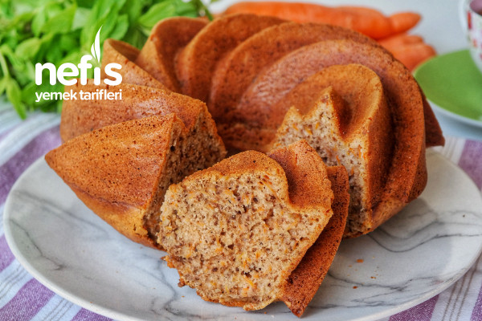
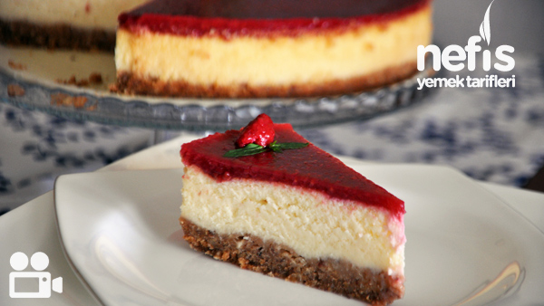

Havuçlu Kek
Havuçlu kek, kek hamurunun içine havuç eklenmiş pasta veya kektir. Modern havuçlu kek tariflerinin çoğunda beyaz krem peynir kreması bulunur. Bazen kek hamuruna ceviz veya ceviz gibi kuruyemişlerin yanı sıra tarçın, zencefil ve öğütülmüş baharat gibi baharatlar da eklenir. Tarif için tıklayın.
Islak Kek

Beş çayınıza eşlik eden kahvenizin yanına yakışan nefis ıslak kek tarifini sizler için derledik. Islak dokusuyla yumuşak kıvamıyla tadını damağınızda bırakan ıslak kekin tarifi Tarif için tıklayın.
Frambuazlı Cheesecake
Sade kek arasına konan, süzme yoğurt ve süt şantisi ile hazırlanan enfes kremanın hafif lezzeti, üstündeki tazecik frambuazların lezzeti ile birleşince ortaya Pelit Frambuazlı Cheesecake lezzeti çıktı. Tarif içi tıklayın.